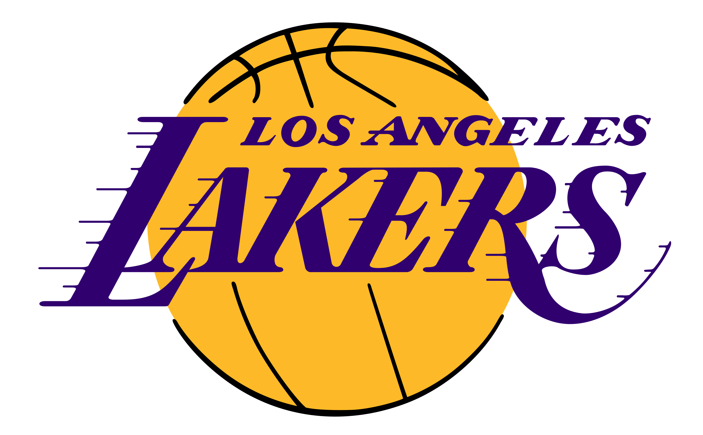
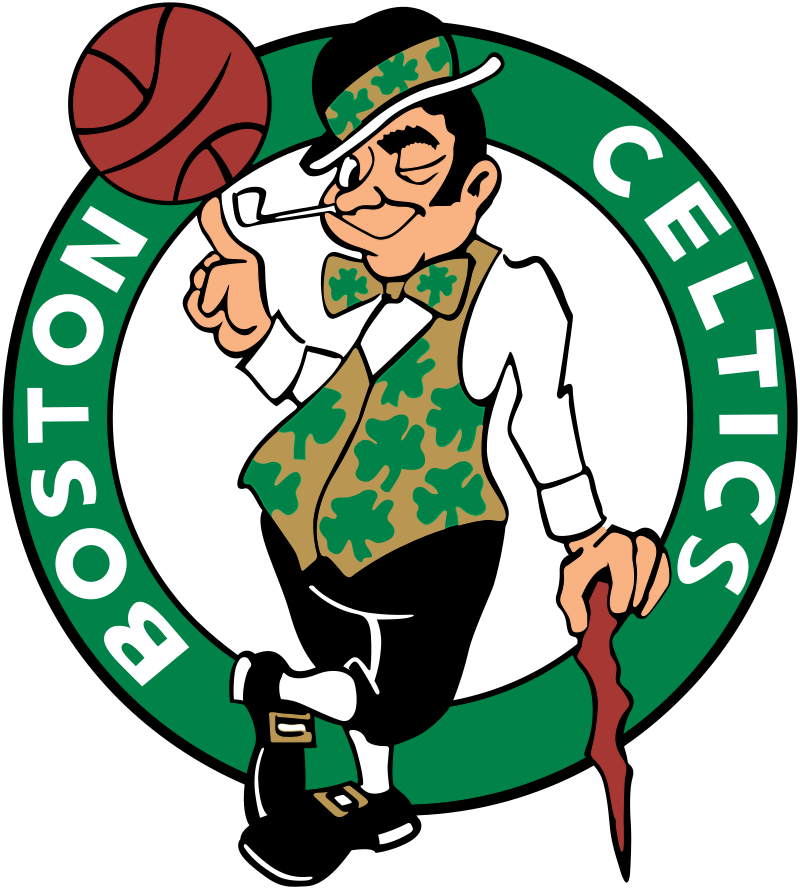
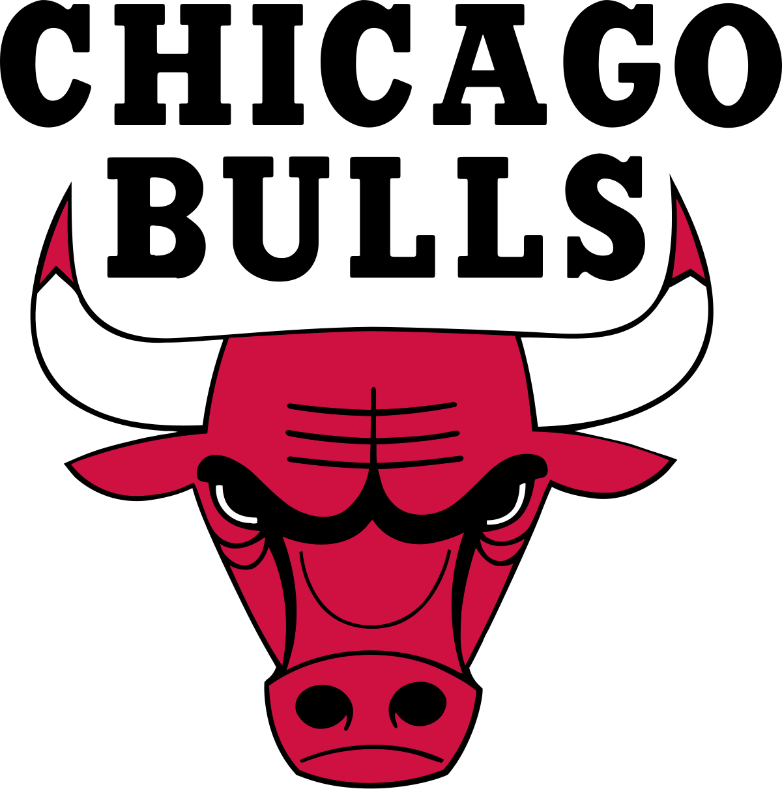
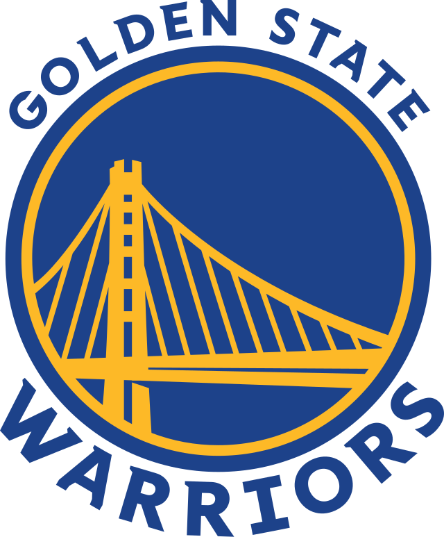
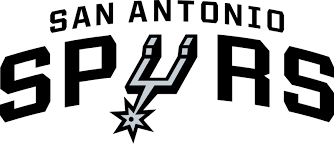

Famous NBA Teams
Throughout NBA history, certain teams have left an indelible mark on the game. Here are some of the most famous teams and their accomplishments:
1. Los Angeles Lakers
Image source: Los Angeles Lakers Official Site
The Lakers are one of the most successful teams in NBA history, with 17 championships. Legendary players like Magic Johnson, Kareem Abdul-Jabbar, Kobe Bryant, and LeBron James have all worn the purple and gold.
2. Boston Celtics
Image source: Boston Celtics Official Site
Known for their incredible rivalry with the Lakers, the Celtics also have 17 championships. Key figures like Bill Russell, Larry Bird, and Paul Pierce have defined the franchise.
3. Chicago Bulls
Image source: Chicago Bulls Official Site
The Bulls, led by Michael Jordan and Scottie Pippen, dominated the 1990s, winning six championships and popularizing basketball globally.
4. Golden State Warriors
Image source: Golden State Warriors Official Site
In recent years, the Warriors have been a dominant force, with stars like Stephen Curry and Klay Thompson leading them to multiple championships.
5. San Antonio Spurs
Image source: San Antonio Spurs Official Site
Under coach Gregg Popovich, the Spurs have won five championships, thanks to players like Tim Duncan, Tony Parker, and Manu Ginóbili.